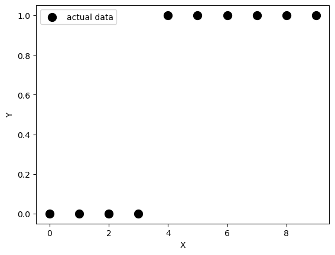
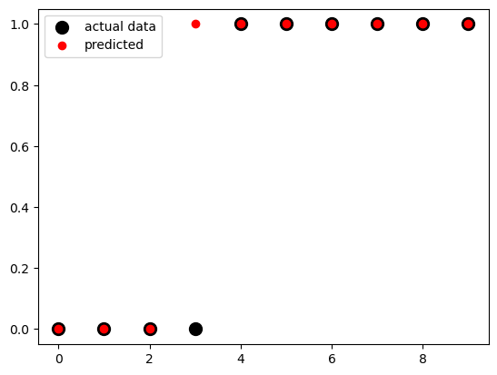
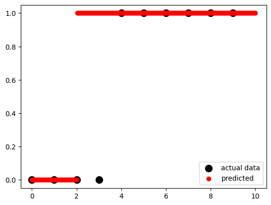
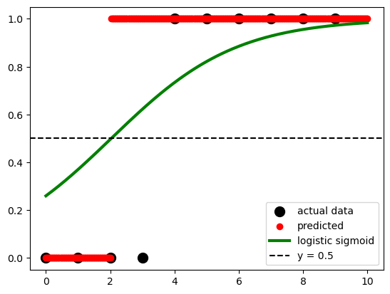
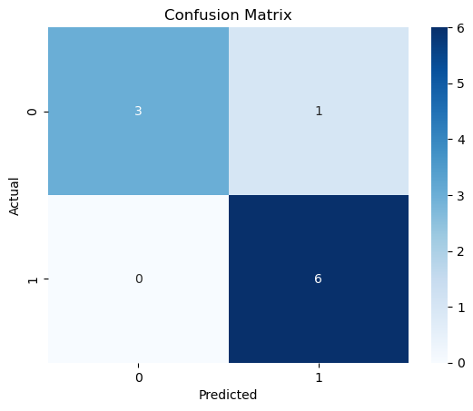

10 Logistic regression
In statistics, the logistic model (or logit model) is used to model the probability of a certain class or event existing such as pass/fail, win/lose, alive/dead or healthy/sick. This can be extended to model several classes of events such as determining whether an image contains a cat, dog, lion, etc. Each object being detected in the image would be assigned a probability between 0 and 1, with a sum of one.
https://en.wikipedia.org/wiki/Logistic_regression
10.1 What’s the difference between linear regression and logistic regression?
Logistic regression analysis is used to examine the association of (categorical or continuous) independent variable(s) with one dichotomous dependent variable. This is in contrast to linear regression analysis in which the dependent variable is a continuous variable.
https://www.javatpoint.com/linear-regression-vs-logistic-regression-in-machine-learning
10.2 Logistic regression in Python
https://realpython.com/logistic-regression-python/
https://towardsdatascience.com/building-a-logistic-regression-in-python-step-by-step-becd4d56c9c8
10.3 Logistic regression: simple example
Import packages
Make up data
Note: we use reshape on x because when using the LogisticRegression function the x array must be two-dimensional.
Using reshape() with the arguments -1, 1 gives us as many rows as needed and one column.
fig, ax = plt.subplots()
ax.scatter(x, y,
color='black',
s=100,
label="actual data")
ax.set_xlabel("X")
ax.set_ylabel("Y")
ax.legend()<matplotlib.legend.Legend at 0x128e72bd0>
Create the model
Train the model
LogisticRegression(solver='liblinear')In a Jupyter environment, please rerun this cell to show the HTML representation or trust the notebook.
On GitHub, the HTML representation is unable to render, please try loading this page with nbviewer.org.
LogisticRegression(solver='liblinear')
Alternatively, we can create and fit the model in just one step
Our potential y-values… not very surprising
The model’s intercept
The model’s coefficient
Evaluate the model
array([[0.74002157, 0.25997843],
[0.62975524, 0.37024476],
[0.5040632 , 0.4959368 ],
[0.37785549, 0.62214451],
[0.26628093, 0.73371907],
[0.17821501, 0.82178499],
[0.11472079, 0.88527921],
[0.07186982, 0.92813018],
[0.04422513, 0.95577487],
[0.02690569, 0.97309431]])This returns the matrix of probabilities that the predicted output is equal to zero or one. The first column is the probability of the predicted output being zero, that is 1 - 𝑝(𝑥). The second column is the probability that the output is one, or 𝑝(𝑥).
You can get the actual predictions, based on the probability matrix and the values of 𝑝(𝑥), with .predict(). This function returns the predicted output values as a one-dimensional array.
Plot the results
fig, ax = plt.subplots()
ax.scatter(x, y,
color='black',
s=100,
label="actual data")
ax.scatter(x, model.predict(x),
color='red',
label="predicted")
ax.legend()<matplotlib.legend.Legend at 0x12b0c6010>
x_test = np.linspace(0, 10, 300).reshape(-1, 1)
fig, ax = plt.subplots()
ax.scatter(x, y,
color='black',
s=100,
label="actual data")
ax.scatter(x_test,
model.predict(x_test),
color='red',
label="predicted")
ax.legend()<matplotlib.legend.Legend at 0x12b0b7c10>
According to the logistic function:
### p=\frac{1}{1+e^{-(a+bx)}} * expit() This is a function from the SciPy library, specifically from the scipy.special module. It calculates the sigmoid function, which is defined as 1 / (1 + exp(-x)).
* .ravel() This function is called on the result of expit() to flatten or reshape the output as a 1-dimensional array. It converts a potentially multi-dimensional array into a contiguous flattened array.
sigmoid = expit(x_test * model.coef_ + model.intercept_).ravel()
fig, ax = plt.subplots()
ax.scatter(x, y,
color='black',
s=100,
label="actual data")
ax.scatter(x_test,
model.predict(x_test),
color='red',
label="predicted")
ax.plot(x_test,
sigmoid,
color='green',
linewidth=3,
label='logistic sigmoid')
ax.axhline(y=0.5,
color='black',
ls='--',
label='y = 0.5')
ax.legend()<matplotlib.legend.Legend at 0x12b192990>
Get the model score
# get the predicted values
y_pred = model.predict(x)
# create the confusion matrix
cm = confusion_matrix(y, y_pred)
# plot the confusion matrix using fig, ax method
fig, ax = plt.subplots()
sns.heatmap(cm, annot=True, cmap='Blues', ax=ax)
ax.set_xlabel('Predicted')
ax.set_ylabel('Actual')
ax.set_title('Confusion Matrix')Text(0.5, 1.0, 'Confusion Matrix')
.score() takes the input and output as arguments and returns the ratio of the number of correct predictions to the number of observations.
10.3.1 We can also use the StatsModels packages, which provides some more statistical details
# import packages
import statsmodels.api as sm
# create data
x = np.arange(10).reshape(-1, 1)
y = np.array([0, 1, 0, 0, 1, 1, 1, 1, 1, 1])
x = sm.add_constant(x)
# create model
model = sm.Logit(y, x)
# fit model
result = model.fit()
# get results
result.paramsOptimization terminated successfully.
Current function value: 0.350471
Iterations 7array([-1.972805 , 0.82240094]) Logit Regression Results
==============================================================================
Dep. Variable: y No. Observations: 10
Model: Logit Df Residuals: 8
Method: MLE Df Model: 1
Date: Mon, 22 Jul 2024 Pseudo R-squ.: 0.4263
Time: 09:07:51 Log-Likelihood: -3.5047
converged: True LL-Null: -6.1086
Covariance Type: nonrobust LLR p-value: 0.02248
==============================================================================
coef std err z P>|z| [0.025 0.975]
------------------------------------------------------------------------------
const -1.9728 1.737 -1.136 0.256 -5.377 1.431
x1 0.8224 0.528 1.557 0.119 -0.213 1.858
==============================================================================